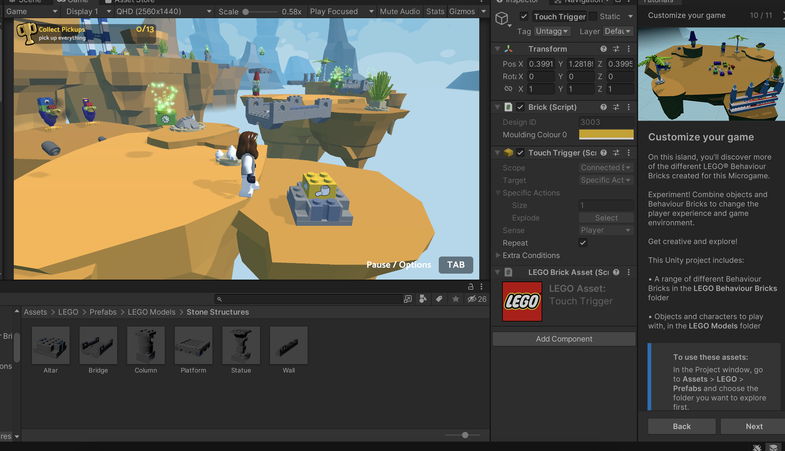
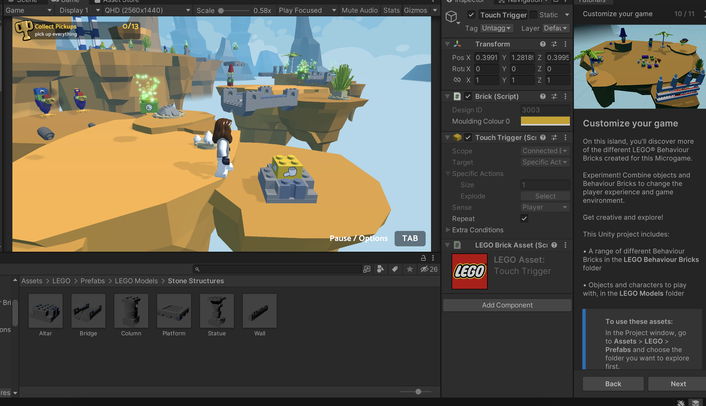
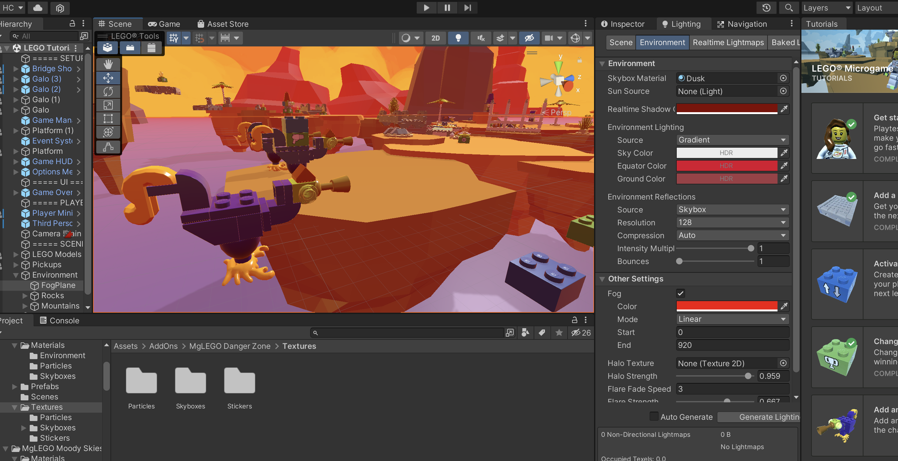
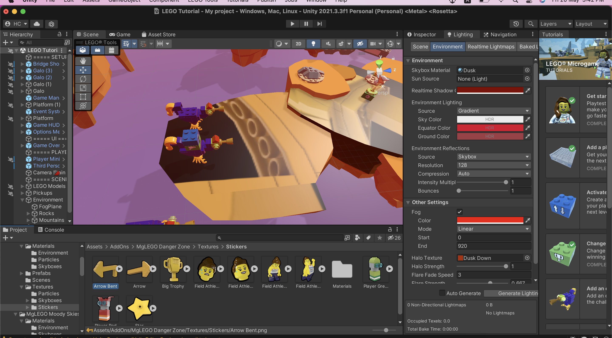
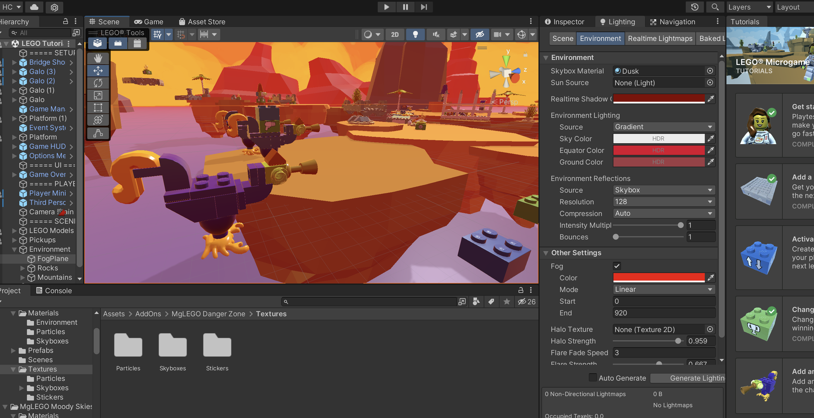
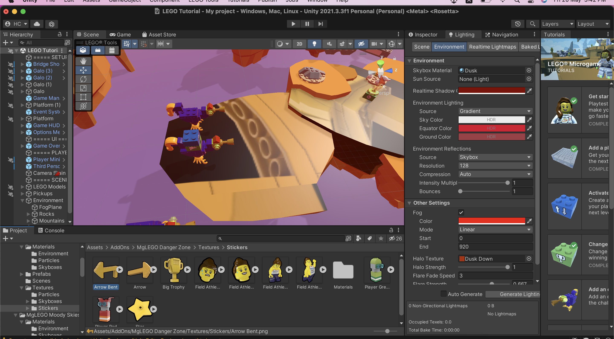
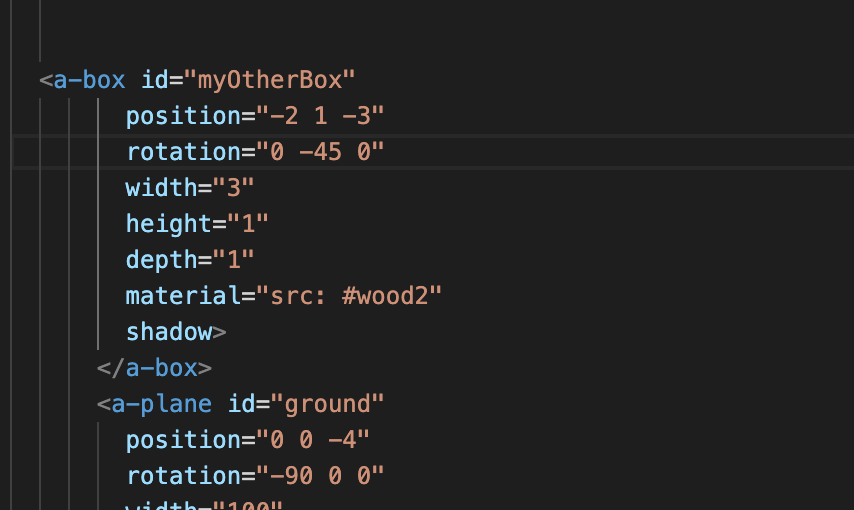

-
Through following 2 Micro Game tutorials in Unity, I learnt mostly about how to navigate the basic working environment, adding, removing, editing and animating objects and their related behaviours, as well as changing the general background elements of the games.
Portfolio Assignment 1. LEGO Microgame
- In the first part of this game I learnt to modify the placement and behaviour of enemies and level objects. I found these instructions to be quite easy to follow given the obvious visual clues from the action blocks itself.
 

 



Portfolio Assignment 2. Platformer Microgame (screen recording)
Portfolio Assignment 3. Aframe
-
01 Hello World: View VR Envronment from public Github repository
- In this exercise, one wood rotate very slowly counter clockwise, and one rotate quickly and each rotates on different axis.
02 Shape： Here I adjusted values of abox element plane and its position properties, in this case I added a experiment with a red primitive shapes(cylinder)
03 Textures: add #wood material attribute and adjusting grass texture tiling
04 Animations: apply animation properties: wood rotating counter clockwise, changing rotation speed and experiment with other aniamtion properties.
